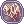
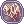

Draft War of Emperium
The Draft War of Emperium (commonly referred to as Draft WoE) is a weekly Guild vs Guild event organized in cooperation by the NovaRO Staff and the players. Draft WoE involves being selected by a Captain to join one of the teams, and then competing with other the other teams in a regular War of Emperium environment. All participants in the Draft WoE will receive  Valor Badges and  Siege Tokens . In order to participate, you must join the Draft WoE Discord: https://discord.gg/z8gqddC
Valor Badges and  Siege Tokens . In order to participate, you must join the Draft WoE Discord: https://discord.gg/z8gqddC
How it Works
Unlike regular War of Emperium, Draft WoE does not have pre-made Guilds competing for the castle. Instead, the Guilds (called teams) will have members chosen from the pool of participating players by previously selected Captains, in what is called the Drafting phase. This will be done at the right side of @go 15, just past the bridge, and usually takes 30 to 45 minutes.
After the Drafting phase ends, the actual War of Emperium will begin, which will last for one hour. At the end of WoE, whichever team is holding the castle will be declared the winner, and receive additional Valor Badges.
Anyone is eligible to participate, as long as you follow the rules below. This makes Draft WoE an ideal opportunity to try out and learn about War of Emperium by playing alongside veterans and newbies in a semi-organized and low-cost environment.
Times
Times in Server Time (PST or PDT when applicable) Outside Daylight Savings Time, drafting starts at 7:00 AM. During Daylight Savings Time, drafting starts at 8:00 AM. You can check the WoE information NPC or @events to confirm the Draft WoE time.
- Sundays at 7:00 AM / 8:00 AM: Drafting phase entry closes - East of @go 15
- Sundays at 8:00 AM / 9:00 AM: War of Emperium begins
Rules
General Rules
- In order to participate, you must join the Draft WoE Discord: https://discord.gg/z8gqddC
- You will not be required to speak, but listening is mandatory to ensure proper communication between team members.
- You will be expected to follow the Captain's instructions during WoE.
- Only Level 190+ characters are allowed.
- Once you are drafted into a team, there will be no way to change it.
- You will have to remain loyal to your team even though your friends may be on the other team.
- If you leave without a justified reason after being drafted into a team, you may be banned from Draft WoE until further notice.
- In addition to these rules, you will be expected to follow any addition rules/instructions posted on the Draft WoE Discord.
Drafting Phase Rules
- The Drafting phase will take place at the east side of @go 15, and will start punctually at the time listed above.
- In order to access the draft location, you will be asked for a 4-digit password which will be pinned on the Draft Discord.
- Once you arrive at the draft location, stay near the Pub Room for your Job.
- You will have to be on Discord starting from this point until the end of the event.
- You will have to leave your guild and keep your gears open while you wait.
- If you are naked or wear joke gears to confuse the picking Captains, you may be banned from Draft WoE until further notice.
- The Captains will roll the dice at the start and then follow the following pick order: 1-2-3,3-2-1, repeat.
- After the 2nd entry , Captains will roll again and picking will restart.
- Captains are not allowed to pick repeat classes on double picks, unless there's less than 2 different classes remaining.
- Only players drafted through this method are allowed to participate. Captains will not be allowed to invite people after draft is over, or outside members, with the exclusion of inviting and kicking support classes so they can give buffs outside Draft Castle.
Mechanics
See also: Siege Customizations
All regular War of Emperium Mechanics apply. However, there are a few changes to take note of, listed below:
- Only players in one of the draft teams will be able to enter the castle.
- Battlegrounds consumables will be enabled.
- No member cap will be in place for the draft teams.
Rewards
Draft WoE participants receive the rewards below.
- 2000 Valor Badges and 750 Siege Tokens for participating.
- Additional 500 Valor Badges for winning.
- Ability to earn Siege Tokens from Battlegrounds.
- WoE Track progression.
In addition, the Captains receive a special set of rewards:
- 5000 Nova Points
- 1
 Guyak Pudding 60m (Bound)
Guyak Pudding 60m (Bound) - 1
 Mega Orleans' Course (Bound)
Mega Orleans' Course (Bound) - 1
 Cellphone (7d)
Cellphone (7d) - Special Achievements
Finally, first-time Captains also receive the reward below (once per person):
- 1 Costume RWC Commemorative Pin (Account Bound)
- 5,000 Nova Points
- 5,000 Valor Badges
- 3 Guyak Pudding 60m (Bound)
- 1
 Mystical Card Album
Mystical Card Album
Please note that, unlike in regular WoE, members of the winning guild do not receive Guild Dungeon Access and Captains cannot access the castle's treasure room.